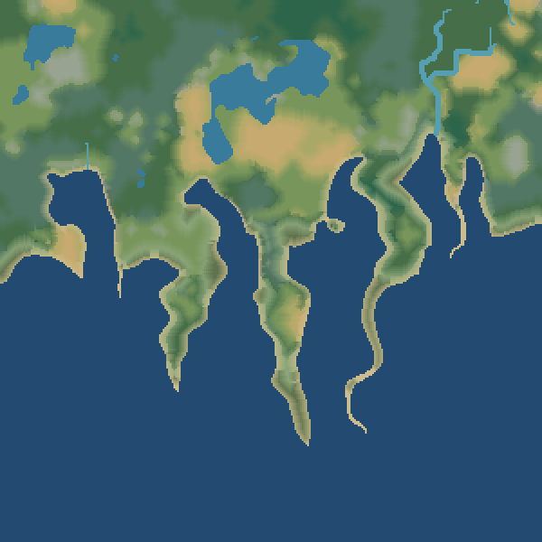
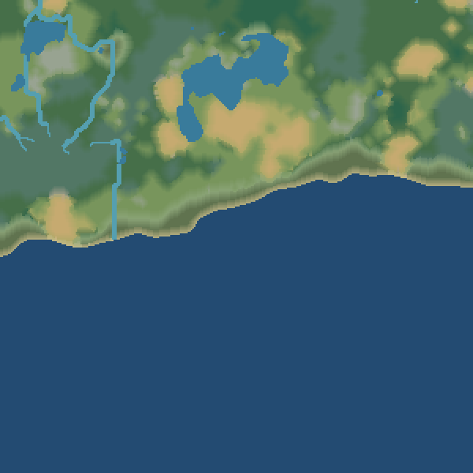
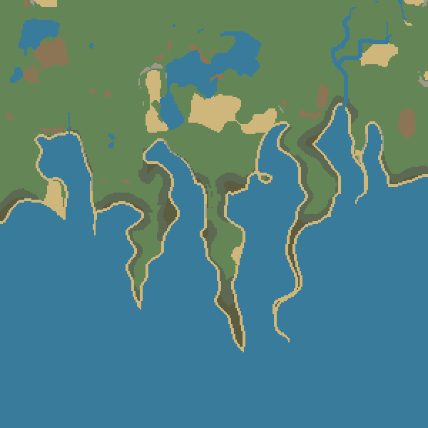
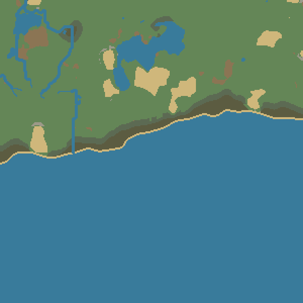
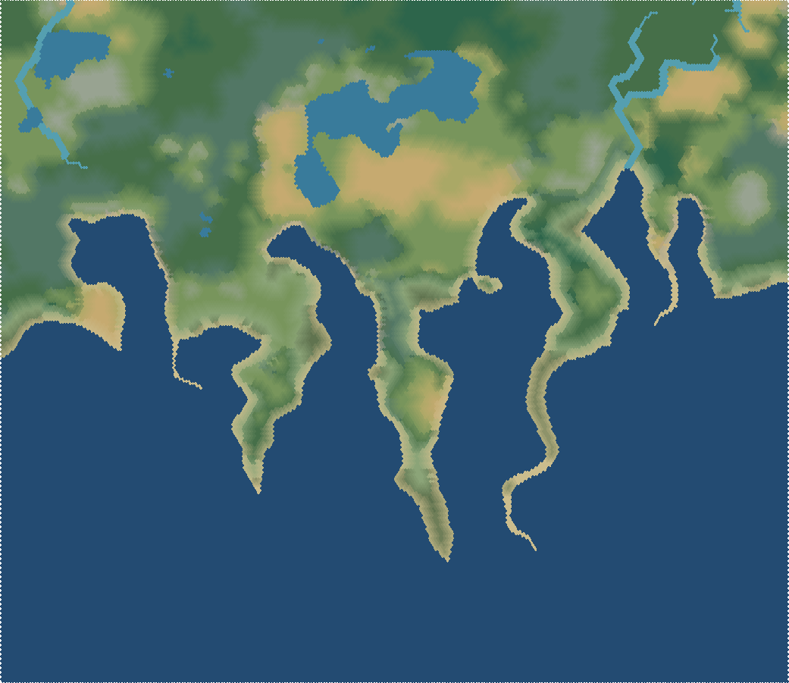
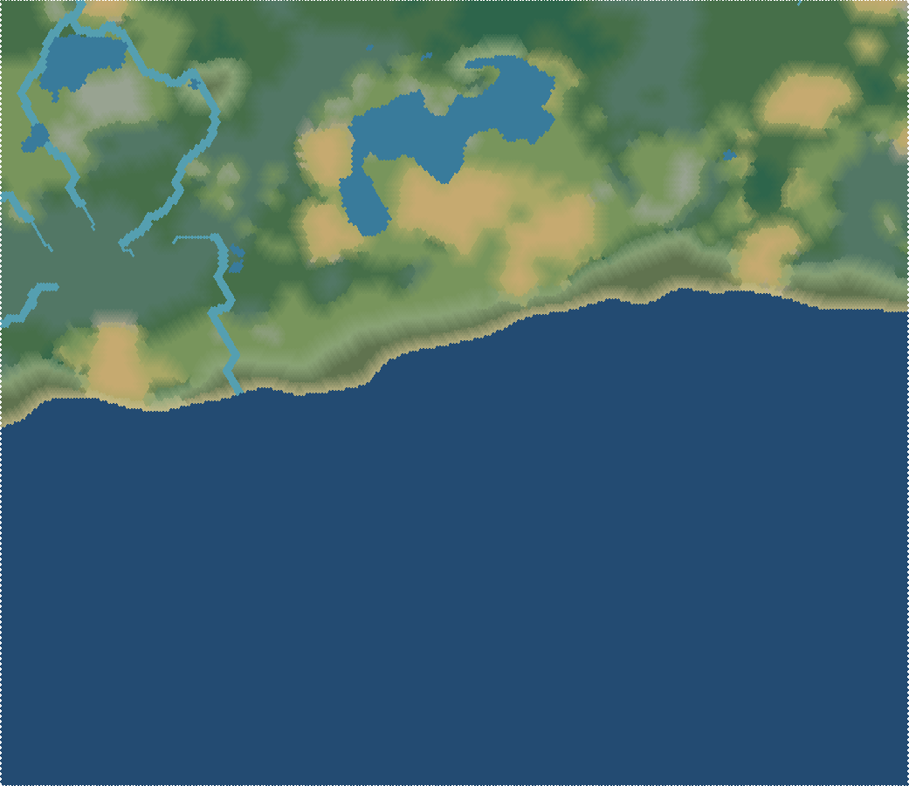
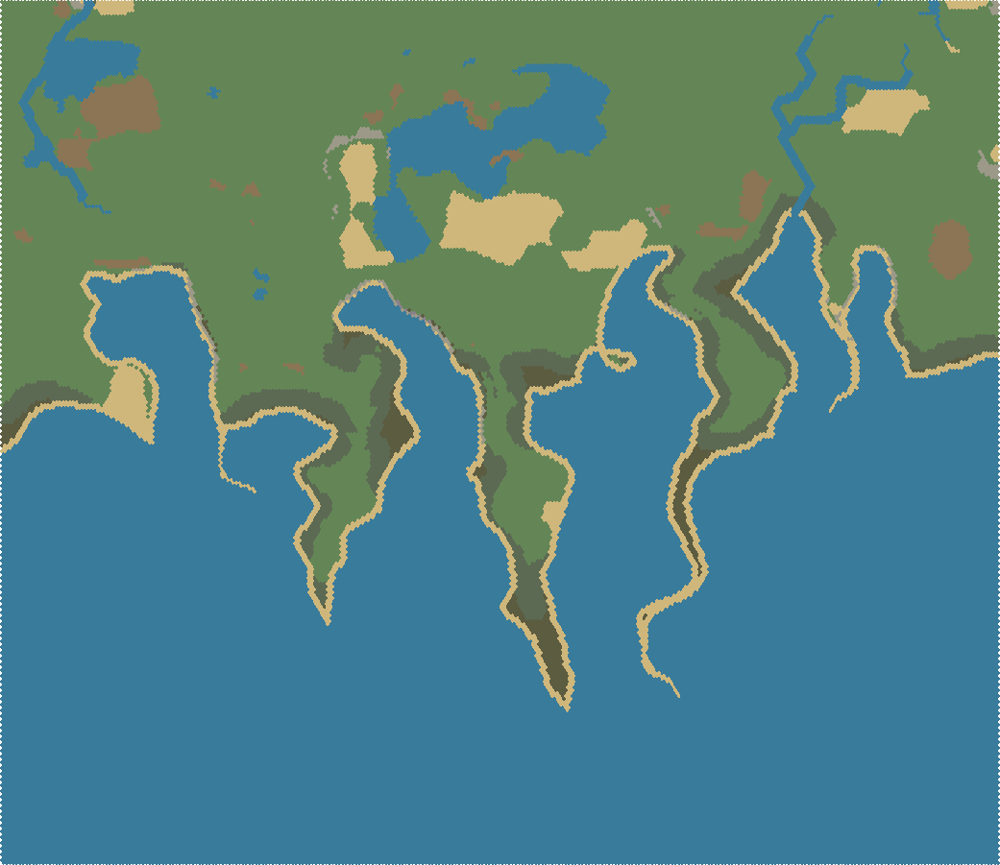
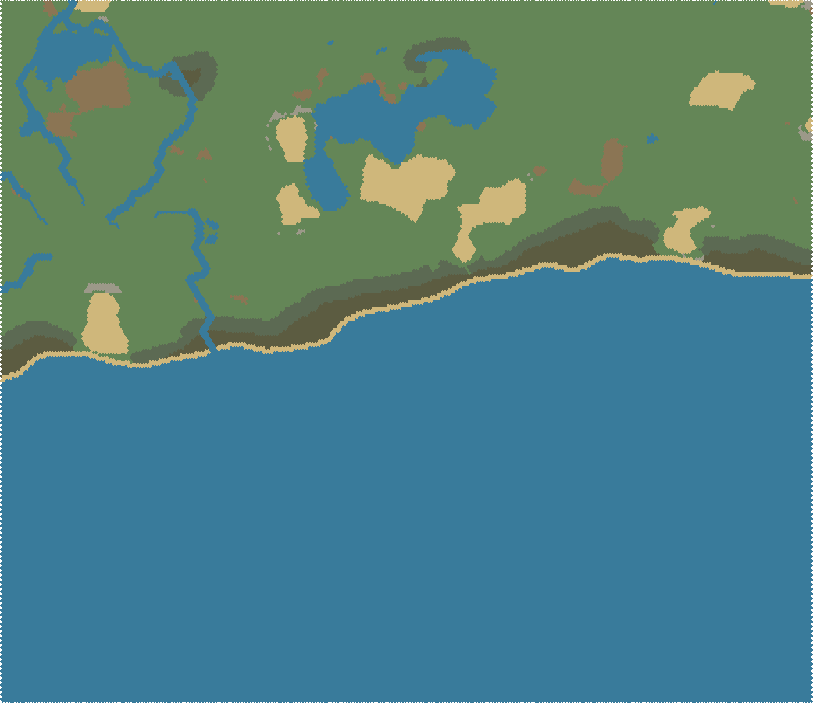

landscape · 300 · coast


Идентичные seed42, размеры, сетки и карточки. «До» — сохранённые PNG предыдущей проверенной матрицы; «после» — текущая генерация. Coast-only: сравнение биомов и материалов300; полная матрица: сравнение биомов50/300.







